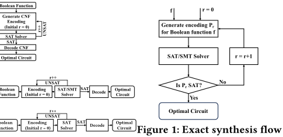
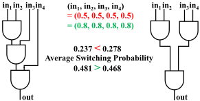
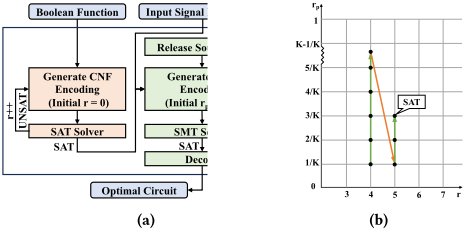
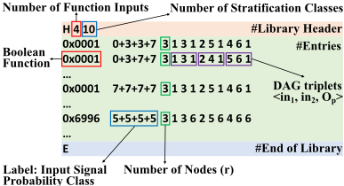
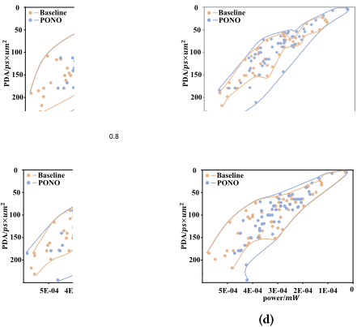

PONO：基于 SMT 近最优子电路生成的功耗优化
论文针对逻辑综合中子电路生成长期只覆盖面积与延迟、缺少功耗导向的问题，提出基于 SMT 的近最优功耗导向子电路生成流程 PONO。方法上，它将 SAT 精确综合的 SSV 编码扩展为 SMT，引入信号概率变量与平均翻转概率资源 r_p，并设计子句在电路中传播；通过概率分层（K=10）把无限搜索空间化为有限空间，并证明误差以 C·D/K 为界；再以 equioptimizable 输入模式合并等价条目压缩库规模。在 EPFL 基准与 NanGate 15nm 工艺下，4 输入库构建约需 7 天；应用于 LUT-based rewrite 后，比 state-of-the-art 精确综合基线多降 8.7% 功耗、比 ABC rewrite 多降 11.4%，且面积与时延性能相当。结论表明局部子电路功耗优化无全局质量退化风险，可与功耗感知 technology mapping 及流程级功耗优化衔接。
逻辑 rewrite 等局部替换优化依赖预计算的高质量子电路库，已有 SAT/SMT 精确综合工作只面向面积、延迟、fanout 等目标，功耗导向的子电路生成缺失。难点在于：功耗依赖 switching probability、leakage、capacitance 等变量，在综合阶段难以建模与跨电路传播；输入信号概率/工作负载向量导致无限搜索空间；功耗导向库需存储 |F|×|Ip| 个电路，规模不可行。
将 SAT-based exact synthesis 的 SSV 编码扩展为 SMT：新增信号概率变量 p_i 与平均翻转概率资源 r_p，通过 SMT 子句沿 Boolean chain 传播信号概率并约束 r_p = Σ2p_i(1-p_i)/r。采用分层（stratification）技术把 [0,1] 概率离散为 K 类，将无限搜索空间化为有限空间，并证明误差以 C·D/K 为界（需 K > D + 2D²，D 为电路最大深度）。提出 equioptimizable 输入信号概率模式：r_p×r 是分段函数，仅记录引起电路变化的输入概率分界点即可压缩库规模。流程分两阶段：先用 SAT 求解器 ParKissat 找可行解，再用 SMT 求解器 Z3（NRA 逻辑）交替释放门数 r 与功耗资源 r_p 约束逼近近最优。生成的 4 输入功耗导向库以 DAG 三元组存储（可压缩为 INT16），嵌入 LUT-based rewrite 流程，节点信号概率可由概率传播（线性时间）或 workload 仿真获得。
在 EPFL arithmetic 与 random control 基准（NanGate 15nm，ABC 做 technology mapping、Innovus 做布局布线）上，PONO 库用于 LUT-based rewrite 比精确综合基线多降 8.7% 功耗，比 ABC rewrite 多降 11.4% 功耗，性能与面积结果相当（个别 case 有可容忍开销）
在 (0.2,0.2,0.2,0.2) 至 (0.8,0.8,0.8,0.8) 四组输入信号概率模式下，生成子电路在 PDA（延迟×面积）与功耗的 Pareto 前沿上均优于原精确综合流程
4 输入函数的库构建约需 7 天（可并行）；SAT/SMT 求解时限设为 18 小时，3984 个 case 中 157 个超时
分层类数 K=10；4 输入函数生成的子电路节点数小于 20，三元组可压缩为 INT16 以缩减库体积
首次将 SAT/SMT 精确综合扩展到功耗目标（此前仅覆盖面积/延迟/fanout）：以信号概率传播子句、概率分层（误差界 C·D/K）与 equioptimizable 输入模式三项技术，分别解决功耗建模与传播、无限搜索空间、库规模爆炸三个障碍；并论证约束子电路内部结构降低翻转概率不影响输出翻转概率，因而局部功耗优化无全局质量退化风险，可安全嵌入 rewrite 类局部优化。
相关度级别：high
命中能力域：2.2 RTL 设计与实现
理由：直接命中 2.2 中的“逻辑综合”与“低功耗设计”两项核心技术：PONO 是综合阶段功耗优化的 EDA 方法学，团队在 LPDDR5X/HBM4/UCIe 等功耗敏感 IP 交付中依赖综合与低功耗流程，8.7% 的额外功耗收益且不牺牲 P&R 后性能/面积，具有直接吸引力；其“局部优化无全局退化风险”的论证也降低了流程集成风险。但论文是综合算法研究，不涉及 RTL 编码、验证方法学或时序签核本身；2.3 仅在评估中使用 Innovus 做 P&R 以获取准确功耗/时延/面积，不构成时序与物理实现的方法贡献，故不匹配 2.3。
建议动作：深入精读并做内部分享
北京大学计算机学院，中国北京
北京大学高能效计算与应用中心，中国北京
{zousunan,gluo}@pku.edu.cn
编码功耗指标以生成面向功耗的子电路。我们可以通过构建一个面向功耗、近乎最优的电路库，在逻辑优化过程中优化电路功耗。
先前的工作利用电路枚举 [12, 16]、函数分解 [8, 11] 来寻找具有不同优化目标和约束的高质量电路。可满足性（SAT）/可满足性模理论（SMT）求解器的最新进展使得精确综合（exact synthesis）能够找到最优电路 [6]。该技术将综合问题转化为带有不同优化目标（如面积 [17]、延迟 [2] 和扇出上限 [9]）的 SAT/SMT 公式。然而，由于以下挑战，这一颇具前景的技术未能考虑功耗：功耗指标选择困难：功耗与翻转概率、漏电流和电容等变量相关。在综合阶段对它们进行设计与建模十分困难。此外，如何通过合适的公式传播这些变量仍是一个问题。搜索空间无限：功耗与输入信号概率模式或工作负载向量相关，导致搜索空间无限。面向功耗的电路库需要存储 | 𝐹 | × | 𝐼 𝑝 | 个逻辑电路，这一规模是不可行的，其中 | 𝐹 | 和 | 𝐼 𝑝 | 分别为函数数量和输入模式数量。
为应对上述挑战，我们选取有效的指标来评估局部动态功耗，并设计子句以在电路中传播变量。通过为信号概率设计一种分层技术，搜索空间可以被缩减为有限空间，并且我们证明了由此引入的误差被一个可容忍的值所界定。所提出的等可优化输入模式（equioptimizable input patterns）进一步缩小了电路库的规模。结合这些技术，我们提出 PONO，通过生成面向功耗的子电路来增强逻辑综合。PONO 包含用于编码功耗的 SMT 公式，并采用与基于 SAT 的精确综合类似的流程来生成子电路。由于在综合过程中无法获得准确的功耗估计，所生成的电路无法保证最优性。然而，PONO 通过逐步放宽总功耗约束来生成近乎最优的子电路。总而言之，我们的贡献如下：
我们在 EPFL 算术和随机控制基准电路上对 PONO 进行评估。所生成的电路推动了 PPA（功耗、性能、面积）方面的 Pareto 前沿，且电路库构建过程在七天内完成。通过在 rewrite 变换中应用面向功耗的电路库，我们在面积和延迟性能相当的情况下，相比最先进方法多实现了 8.7% 的功耗降低。
为局部替换生成高质量子电路是逻辑综合中一种有效的优化技术。关于生成面积最优与延迟最优子电路的研究工作已十分丰富，极大地提升了逻辑优化质量。然而，面向功耗的子电路生成却鲜有讨论，而在这一 15 nm 以下的工艺时代，功耗优化至关重要。我们提出 PONO，一种基于可满足性模理论（SMT）的面向功耗优化的近乎最优子电路生成流程。PONO 支持面向功耗的电路库构建，并填补了在 PPA（功耗、性能与面积）方面生成接近 Pareto 前沿电路的空白。在 rewrite 这一关键逻辑优化算法中，PONO 相比传统方法展现出功耗降低方面的优越性。我们在 EPFL 基准电路上对 PONO 进行了测试，结果表明其功耗降低 8.7%，且布局布线后的性能与面积均未受损。
逻辑综合、SMT 问题、低功耗综合
Sunan Zou 和 Guojie Luo。2024。PONO：基于 SMT 的近最优子电路生成功耗优化。载于第 61 届 ACM/IEEE 设计自动化会议（DAC '24），2024 年 6 月 23-27 日，美国加利福尼亚州旧金山。ACM，美国纽约州纽约，6 页。https://doi.org/10.1145/3649329.3655904
降低功耗在电子设计自动化（EDA）中至关重要。面向功耗的逻辑综合在逻辑优化的早期阶段已变得十分普遍 [21]。作为逻辑综合中的一项关键技术，逻辑重写（logic rewrite）[13] 通过迭代地用高质量的预计算子电路替换原有子电路来优化电路质量。预计算电路对重写质量有着至关重要的影响，已有诸多工作专注于生成面积最优和延迟最优的子电路。然而，面向功耗的子电路生成仍然缺失。在本文中，我们将可满足性模理论（SMT）公式应用于
允许免费制作本作品全部或部分的数字或硬拷贝供个人或课堂使用，前提是这些拷贝不用于营利或商业目的，且拷贝在首页带有本声明及完整的引用信息。本作品中归作者以外他人所有的组件之版权必须予以尊重。允许注明出处的摘录。如需以其他方式复制、再版、发布到服务器或分发至列表，则需要事先获得特定许可和/或支付费用。如需申请许可，请联系 permissions@acm.org。
© 2024 版权由所有者/作者持有。出版权授权予 ACM。ACM ISBN 979-8-4007-0601-1/24/06

高质量的预计算电路可以通过逻辑重写（logic rewrite）变换来帮助优化网表。网表是一种电路表示 Sunan Zou and Guojie Luo，由逻辑节点和连接它们的边组成。一个节点的割（cut）是一组能够阻断从原始输入到该节点的所有路径的节点集合。Rewrite 尝试对每个节点迭代地用预计算的等价子电路替换其割 [13]。这种局部优化可以不断累积，从而带来最终的质量提升。Rewrite 将网表变换为功能等价但功耗、性能与面积（PPA）更优的网表。Rewrite 的效果取决于割选择策略和子图质量。本文专注于改进后者。PONO 能够生成面向功耗的子电路，从而在功耗方面增强 rewrite。为简单起见，本文采用查找表（LUT）映射 [15] 来生成割，并用预计算的割进行替换。

CMOS 电路的功耗主要由动态功耗和静态功耗组成。动态功耗（𝑃 𝐷）来自负载电容的充放电，可通过下式计算：
𝑉 是工作电压，𝐷 𝑛 是转换密度（每秒逻辑转换的平均次数），𝐶 𝑛 是负载电容。由于在逻辑综合阶段无法获得负载电容，转换密度是该阶段典型的功耗度量指标 [19]。静态功耗（𝑃 𝑆）是网络中所有标准单元泄漏功耗的总和。优化这些变量有助于降低功耗。我们选择具有代表性的变量 𝐷 𝑛 来表示电路功耗，并帮助生成面向功耗的近最优电路。
先前基于精确综合（exact synthesis）的子电路生成工作为逻辑综合中的面积和延迟优化提供了新的机会 [2, 17]。它们所构建的最优电路库优于 ABC [14]。然而，这些最优库并未考虑功耗降低。为逻辑优化生成面向功耗的子电路是一种直观的做法。
尽管原始的精确综合使用拓扑信息来加速流程 [4, 5]，但所生成电路的内部结构并未受到约束。因此，对于同一功能，该流程可以生成尺寸或深度相同但拓扑不同的电路。图 2 展示了逻辑等价的 4 输入 𝐴𝑁𝐷 门的实现。内部结构会影响转换功耗，而不同的输入信号概率适合不同的结构。例如，当输入概率 PONO: Power Optimization with Near Optimal SMT-based Sub-circuit Generation 为 ( 0 . 5 , 0 . 5 , 0 . 5 , 0 . 5 ) 时，图 2 中左侧电路具有更低的平均转换概率和总转换概率。相比之下，当输入概率为 ( 0 . 8 , 0 . 8 , 0 . 8 , 0 . 8 ) 时，右侧电路在功耗方面表现更好。这凸显了在子电路生成过程中考虑功耗的必要性。

此外，在局部场景中生成子电路以优化功耗是很有前景的。优化局部尺寸可以减少全局面积 [17]，而优化深度可以确保全局结果不会变差 [2]。在局部优化动态功耗也是如此。通过约束内部结构来降低子电路内部的转换概率，并不会影响输出的转换概率。局部优化不存在全局质量退化的风险。该技术可以与面向功耗的工艺映射相结合，以隐藏具有高转换概率的信号。它在流程级功耗优化 [21] 和面向功耗的标准单元库构建 [18] 中的潜在应用也很有前景。
在生成考虑功耗的近优子电路时，第一步是对功耗进行建模。在逻辑综合阶段，由于尚未引入工艺信息，门的数量可以用来建模静态功耗。因此，我们不引入新的变量或子句，而是用 𝑟 来表示它们。对于动态功耗，我们需要从公式 (1) 中选择变量来对所生成电路的功耗进行建模。这些变量必须具有代表性，并且在编码过程中能够在所使用的门之间传播。我们首先排除了工作电压和工作频率，因为我们假设它们是恒定的，且对所有子电路而言都与器件规格保持一致。
我们还舍弃了负载电容 𝐶 𝑛，由于缺少必要的工艺信息，它在逻辑综合阶段难以近似。事实上，这类信息只有在物理设计阶段才可获得。此外，负载电容对子电路内部局部功耗的影响并不显著。这是因为节点的负载电容由其扇出决定，而子电路中的扇出数量通常较少。子电路中只有几十个门，与子电路之间的相应电容相比，其产生的负载电容较小。因此，我们使用 𝐷 𝑛 来建模子电路的局部功耗行为。在粗略模型中，转换密度与转换概率呈线性关系。时序和毛刺可能导致该模型不够精确，但作为高层启发式方法，它能够有效工作，这一点已在第 5 节中得到验证。我们可以根据输入信号为 1 的概率以及各节点的函数来计算转换概率。我们通过添加变量 𝑝 𝑖 来扩展 SSV 编码，以表示 𝑥 𝑖 取值为 1 的信号概率（在本文其余部分简称为信号概率）。PONO 还约束了一种新类型的资源：平均转换概率 𝑟 𝑝，用以表征电路的功耗。通过引入与这些变量相关的子句，我们的扩展能够对功耗进行建模，并且我们将该扩展形式化为一个 SMT 问题。
图 3a 详细展示了 PONO 的框架。它以目标布尔函数 𝑓 : B 𝑛 → B 和输入信号概率 𝑃 = ( 𝑝 1 , 𝑝 2 , ..., 𝑝 𝑛 ) 作为输入。随后，一个类似精确综合的试错流程开始运行，包含两个阶段：找到一个可行解，以及找到一个估计功耗“最小”的解。第一阶段（红色）与原始精确综合一样不考虑功耗，并使用 SAT 求解器 ParKissat [20] 以加快求解速度。在获得可行解之后，第二阶段（绿色）通过约束门数量 𝑟 和功耗资源 𝑟 𝑝 来尝试优化功耗，并启动新一轮的试错流程。我们使用 SMT 求解器 Z3（NRA 逻辑）[3] 来求解所构建的编码。由于 𝑟 和 𝑟 𝑝 通过 𝑟 × 𝑟 𝑝 来约束功耗，我们可以放宽 𝑟 约束以显著减小 𝑟 𝑝 ，从而扩大功耗优化的搜索空间。因此，𝑟 和 𝑟 𝑝 可以交替递增，如图 3b 所示，其中绿线表示 𝑟 𝑝 的递增，红线表示 𝑟 的递增。
对于面向功耗的库构建，我们对取实数值的 𝑟 𝑝 进行离散化，将无限搜索空间缩减为有限搜索空间。当离散化类别数 𝐾 足够大时，这种近似可以归约为原始问题。由于库的规模将为 | 𝐹 | × 𝐾 𝑛 ，其中 | 𝐹 | 是库中函数的数量。这种指数级的增长速度使得随着 𝐾 的增大，存储这样的库变得不可行。因此，我们提出等可优化（equioptimizable）输入信号概率模式来缩小库的规模。
我们基于 SSV 编码，将面向功耗的近最优子电路生成编码为一个可满足性模理论（SMT）问题。SMT 由两部分组成：SSV 转换部分和功耗相关部分。前者将原本以 SAT 公式表示的 SSV 编码直接转换为 SMT 公式。后者采用一组新的变量来表示与功耗相关的资源：
𝑝 𝑖 ：𝑥 𝑖 取值为 1 的信号概率，1 ≤ 𝑖 ≤ 𝑛 + 𝑟 。𝑟 𝑝 ：平均开关概率。
我们将 𝑝 𝑖 传播至整个电路，并通过 𝑟 𝑝 = 𝑛 + 𝑟 𝑛 + 1 2 𝑝 𝑖 ×( 1 - 𝑝 𝑖 ) 𝑟 计算平均开关概率，将其作为功耗的受约束资源。
信号概率 𝑝 𝑖 和平均开关电容 𝑟 𝑝 都是 [ 0 , 1 ] 内的实数，这导致了无限的搜索空间和难以处理的库。因此，我们利用一种分层技术将搜索空间从无限缩减为有限。该技术将开关概率和输入概率缩减为有限个类别，使得通过 SMT 公式生成面向功耗的电路成为可能。我们创建 𝐾 个类别，将区间 [ 0 , 1 ] 划分为 𝐾 个区间 [ 0 , 1 / 𝐾 ) , [ 1 / 𝐾, 2 / 𝐾 ) , ..., [ 𝐾 - 1 / 𝐾, 1 ] 。我们将落入第 𝑘 个子区间的输入信号概率归入第 𝑘 个类别。在 PONO 流程中，我们以类别为单位逐渐放松 𝑟 𝑝 约束。通过将每一步的 𝑟 𝑝 约束到指定值，我们可以生成用于面向功耗逻辑优化的子
Consider a circuit with an input probability pattern ( 𝑝 1 , 𝑝 2 , ..., 𝑝 𝑛 ) Wedefine the node's depth (level) as the maximum number of nodes (including itself) connecting it to any primary inputs. We propose that output signal probability error at 𝑑 -level nodes is bounded by 𝑑 + 1 𝑘 and thus by 𝐶𝐷 𝐾 . We prove this proposition by mathematical induction. For 0-level nodes (primary inputs), the signal error is bounded by 1 𝐾 , the same as the subinterval length. Assume the proposition holds for ( 𝑑 -1)-level nodes, and we check the output signal error for 𝑑 -level nodes. Output signal probability 𝑆 𝑝 is a function of input signal probability. We denote the input signal probability error as 𝜖 . We calculate the output signal probability error function 𝑓 𝑒 = max (| 𝑆 𝑝 ( 𝑝 1 ± 𝜖 1 , 𝑝 2 ± 𝜖 2 ) - 𝑆 𝑝 ( 𝑝 1 , 𝑝 2 )|) of all sixteen two-input Boolean functions as in Table 1, where 𝑝 1 , 𝑝 2 are actual input signal probability of 𝑑 -level nodes. Note that 𝑝 1 , 𝑝 2 are in [ 0 , 1 ] , and 𝜖 1 , 𝜖 2 are bounded by 𝑑 𝑘 for ( 𝑘 - 1 ) -level nodes. Therefore, error functions are bounded by 𝑑 + 1 𝐾 when 𝐾 > 𝐷 + 2 𝐷 2 for 𝑘 -level nodes, and thus, the proposition holds. As for switching probability, the error function for 𝑑 -level nodes is smaller than 2 | ( 𝑝 + 𝑑 𝑘 )( 1 - 𝑝 - 𝑑 𝑘 ) - 𝑝 ( 1 - 𝑝 ))| , bounded by 𝐶𝐷 𝐾 .
| 0 | 1 |
|---|---|
| Boolean Function | 𝑓 𝑒 |
| 0x0, 0xf | 0 |
| 0x1, 0xe | 𝑝 1 𝜖 2 + 𝑝 2 𝜖 1 + 𝜖 1 𝜖 2 |
| 0x2, 0x4, 0xb, 0xd | ( 1 - 𝑝 1 / 2 ) 𝜖 2 + 𝑝 2 / 1 𝜖 1 + 𝜖 1 𝜖 2 |
| 0x3, 0x5, 0xa, 0xc | 𝜖 1 / 2 |
| 0x7, 0x8 | ( 1 - 𝑝 1 ) 𝜖 2 + ( 1 - 𝑝 2 ) 𝜖 1 + 𝜖 1 𝜖 2 |
| 0x6, 0x9 |
| 0 | 1 |
Since a node's input signal probability and Boolean function decide its output signal probability, signal probability 𝑝 𝑖 can propagate inside a circuit with variables 𝑠 𝑖 𝑗𝑘 and 𝑓 𝑖𝑢𝑣 . Selection variables 𝑠 𝑖 𝑗𝑘 specify the relationship 𝑥 𝑖 = 𝑥 𝑗 𝑜 𝑖 𝑥 𝑘 while function variables 𝑓 𝑖𝑢𝑣 specify the Boolean function 𝑜 𝑖 . The truth table of 𝑥 𝑖 's Boolean function can be seen as a sum-of-product formula. The output signal becomes 1 only when input node signals make one product term 1. We can calculate the signal probability 𝑝 𝑖 by summing up the product of the correspondent signal probability for each term related to 𝑝 𝑗 and 𝑝 𝑘 . Therefore, we propagate 𝑝 𝑖 through the whole circuit by adding a set of SMT clauses:
𝑝 𝑗𝑢 equals 𝑝 𝑗 when constant value 𝑢 = 1, and 𝑝 𝑗𝑢 is 1 - 𝑝 𝑗 when 𝑢 = 0. Similarly, 𝑝 𝑘𝑣 depends on the value of 𝑣 . Then, we calculate Sunan Zou and Guojie Luo the average switching probability based on the signal probability of each node through the SMT clauses:

Finally, we constrain the allowed power resource via the clause:
𝐾 increments by unit at each step until the encoded SMT problem has a satisfiable assignment.
上一节详细阐述了我们如何将无限搜索空间缩减为有限搜索空间。然而，随着 𝐾 的增大，构建子电路条目呈指数级增长的面向功耗的库仍然具有挑战性。因此，我们提出了一种等可优化模式（equioptimizable pattern），通过合并对应于同一电路的输入信号概率模式来进一步缩减搜索空间。PONO 的流程是在给定输入信号概率 𝑃 的条件下，寻找具有最小 𝑟 𝑝 × 𝑟 的电路来实现特定功能。不同的输入信号概率模式可能适用于具有相同内部结构的电路，我们将这些输入模式称为等可优化模式。
电路的内部结构取决于允许资源 𝑟 以及变量 𝑠 𝑖 𝑗𝑘 和 𝑓 𝑖𝑢𝑣 的赋值。当内部结构确定后，如公式 (2) 和 (3) 所示，𝑟 𝑝 是输入信号概率 𝑃 的函数。因此，定义在 [ 0 , 1 ] 𝑛 上的 𝑟 𝑝 × 𝑟 是一个分段函数。𝑟 𝑝 × 𝑟 的各子函数均为可微初等函数，且仅在生成的电路发生改变时才会交替变化。每个子函数的子域对应于一组输入信号概率模式。由于等可优化模式在取值上是连续的，我们只需记录导致电路变化的输入模式的变化点取值。
所设计的面向功耗的库包含一个文件头（header）和一个条目列表（标签-电路对），如图 4 所示。为了压缩库的规模，它仅记录 P 类函数。电路的标签是目标布尔函数真值表与变化点输入信号模式的组合。文件头记录诸如输入数量和分层类别 𝐾 等基本信息。我们为 n 输入信号概率模式 𝑃 1 = ( 𝑝 1 1 , 𝑝 1 2 , ..., 𝑝 1 𝑛 ) 和 𝑃 2 = ( 𝑝 2 1 , 𝑝 2 2 , ..., 𝑝 2 𝑛 ) 设计了一种排序规则：
每个条目的标签记录了这样的 𝑃 ：输入信号概率 𝑃 𝑖 < 𝑃 所对应的电路与 𝑃 所对应的电路不同。具有相同真值表的条目列于
0.4
逻辑重写（logic rewrite）变换针对每个节点，用等价的预计算子图替换子电路 [13]。子电路库对重写的质量起着至关重要的作用。我们通过应用所生成的面向功耗的电路库，设计了一种面向功耗的重写流程。与原始重写流程不同，PONO 需要计算所有节点的初始信号概率，以查找对应的预计算电路。用户可以在精度与执行时间的权衡中，决定通过概率传播还是工作负载仿真来获得信号概率。
Algorithm 1 详细阐述了 PONO 中面向功耗重写的流程。该算法以电路网表 𝑁 为输入，并完成查找表（LUT）映射，以获得用于重写变换的 4-cuts。随后，它基于输入信号概率或工作负载向量计算所有节点的信号概率。概率传播可以在线性时间内完成，而工作负载仿真则需要更多时间，以换取更高的精度。之后，算法遍历网表中的每个 4-cut，从面向功耗的库中查找等价子电路，并用预计算的子网表替换该 cut。子电路搜索过程首先基于布尔函数定位一组条目，然后根据输入信号概率模式，通过二分查找找到面向功耗的电路。实验表明，这种面向功耗的重写流程能够在面积和延迟相当的情况下降低功耗。
In this section, we evaluate the efficacy of PONO. We implement PONO in C++ and test it on a server with 2-way Intel Xeon Gold 6248R CPUs and 512GB DDR4 memory. We compare PONO with LUT-based rewrite using state-of-the-art exact synthesis flow [6] (baseline) and ABC rewrite [14], which do not consider power DAC '24, June 23-27, 2024, San Francisco, CA, USA

consumption. Our experiments verify that PONO can effectively generate a power-oriented library and help rewrite transformation to reduce power consumption. We limit SAT/SMT solving time to 18 hours, and 157 out of 3984 cases exceed the time limitation. The library generation process for 4-input functions takes about seven days. Number of stratification classes 𝐾 is set to 10. We evaluate our framework on EPFL arithmetic and random control benchmarks [1] with NanGate 15nm [10] technology. When evaluating the results, we use ABC for technology mapping and the commercial tool Innovus (v18.12-s106 1) for placement and routing to get accurate power, latency, and area value.
Wecompare the library generated by PONO and baseline flow [6] to verify the quality of generated power-oriented near optimal circuits. We conduct experiments on P classes of 4-input Boolean functions under four different input signal probability patterns: (0.2, 0.2, 0.2, 0.2), (0.4, 0.4, 0.4, 0.4), (0.6, 0.6, 0.6, 0.6), and (0.8, 0.8, 0.8, 0.8). Figure 5 presents the comparison result of the generated circuits' quality, where PDA is the product of delay (latency) and area. PONO can push the Pareto frontier (PDA and power) forward under tested input signal probability patterns. This manifests the circuit quality superiority over the original exact synthesis flow. Therefore, the generated power-oriented library can optimize the circuit in power, performance (latency), and area simultaneously rather than just considering the latter two metrics.
We then verify the optimizing effect when applying a poweroriented library in LUT-based rewrite transformation on EPFL arithmetic and random control benchmarks. We randomly generate ten sets of workload vectors to obtain input signal probability and calculate the average power result for evaluation. We compare the power-oriented rewrite flow in Section 4.4 with LUT-based rewrite using the library generated by the original exact synthesis flow [6] and ABC rewrite [14]. Table 2 shows the tested circuits' power, performance, and area. PONO can effectively optimize 8.7% more power consumption than the baseline. It also outperforms ABC
| Case.Case | Original Circuits.Power ( 𝑚𝑊 ) | Original Circuits.Latency ( 𝑝𝑠 ) | Original Circuits.Area ( 𝑢𝑚 2 ) | ABC rewrite.Power Saving | ABC rewrite.Latency Saving | ABC rewrite.Area Saving | Baseline.Power Saving | Baseline.Latency Saving | Baseline.Area Saving | LUT-rewrite using PONO.Power Saving | LUT-rewrite using PONO.Latency Saving | LUT-rewrite using PONO.Area Saving |
|---|---|---|---|---|---|---|---|---|---|---|---|---|
| adder | 2.70E+02 | 893.90 | 197.35 | -34.06% | -5.21% | -37.04% | -47.33% | 51.15% | -55.13% | -33.69% | 46.08% | -66.10% |
| bar | 1.63E+03 | 394.80 | 652.05 | 14.26% | 5.45% | 12.41% | 21.27% | -21.05% | 27.38% | 37.31% | -2.81% | 6.59% |
| div | 3.61E+04 | 23106.95 | 14922.20 | 27.61% | 0.36% | 18.43% | -23.79% | -10.45% | 20.50% | 15.29% | 11.81% | 3.02% |
| hyp | 9.66E+05 | 273878.59 | 48562.91 | 1.75% | 39.76% | -7.66% | 2.47% | 32.29% | -1.52% | 6.03% | 39.48% | -6.94% |
| log2 | 5.86E+04 | 3117.10 | 6142.03 | -5.28% | -0.63% | -1.74% | -5.58% | 1.80% | -19.74% | 12.05% | 11.40% | 21.93% |
| max | 3.51E+03 | 1317.20 | 687.78 | -13.38% | -23.15% | -2.84% | 6.87% | 2.44% | 14.41% | 21.76% | 9.54% | 8.42% |
| multiplier | 4.87E+04 | 3370.91 | 6362.68 | 9.31% | 51.84% | 10.03% | 21.49% | 54.07% | 11.35% | -0.12% | 56.78% | -4.68% |
| sin | 8.58E+03 | 1399.60 | 1323.07 | -9.12% | 9.83% | -6.68% | 0.17% | 2.49% | -3.27% | 9.58% | -0.69% | -2.76% |
| sqrt | 1.65E+05 | 68334.73 | 6345.87 | 2.66% | 12.27% | 15.65% | 54.16% | -18.91% | 14.36% | 24.25% | -5.65% | 12.66% |
| square | 1.34E+04 | 1224.50 | 3602.74 | -9.00% | -17.64% | -0.63% | -29.32% | 16.35% | -12.36% | -4.99% | 11.50% | -13.75% |
| arbiter | 3.78E+03 | 429.20 | 1888.96 | 0.50% | -0.05% | 0.00% | 72.91% | 27.77% | 29.45% | 77.83% | 22.65% | 33.12% |
| cavlc | 1.88E+02 | 127.60 | 120.18 | 4.68% | 13.48% | 3.31% | -0.85% | 0.47% | 0.67% | 4.09% | 7.92% | -2.00% |
| ctrl | 3.29E+01 | 39.10 | 26.64 | 26.45% | -21.23% | 18.27% | 16.97% | -11.76% | 12.61% | 26.54% | -5.88% | 8.56% |
| dec | 4.29E+01 | 61.30 | 62.62 | -2.80% | -20.72% | -0.16% | -9.31% | -4.73% | -1.10% | 4.22% | -1.35% | 1.46% |
| i2c | 2.35E+02 | 89.30 | 227.38 | 6.30% | -4.03% | 3.96% | 4.39% | -6.72% | 12.30% | 6.90% | -4.14% | 7.37% |
| int2float | 4.92E+01 | 67.30 | 39.08 | 4.71% | 0.45% | 4.28% | 5.34% | 9.96% | -1.38% | 2.64% | 2.82% | 2.23% |
| mem_ctrl | 2.43E+04 | 2482.80 | 8217.13 | -2.63% | 17.63% | -0.37% | 9.82% | 15.70% | 6.01% | 9.98% | 19.69% | -1.26% |
| priority | 5.28E+02 | 778.50 | 273.83 | 33.64% | 46.29% | 24.77% | -4.17% | 35.35% | 12.85% | 35.00% | -10.08% | 10.57% |
| router | 6.47E+01 | 133.30 | 60.95 | 14.39% | 7.28% | 11.30% | 14.58% | 10.05% | 13.31% | 17.79% | 3.53% | 5.41% |
| voter | 2.12E+04 | 417.70 | 4592.22 | 19.83% | 13.57% | 19.76% | 32.81% | 4.48% | 12.15% | 44.90% | 3.33% | 11.38% |
| average | - | - | - | 4.49% | 6.28% | 4.25% | 7.15% | 9.54% | 4.64% | 15.87% | 10.79% | 1.76% |
| Case.Case | Original Circuits.Power ( 𝑚𝑊 ) | Original Circuits.Latency ( 𝑝𝑠 ) | Original Circuits.Area ( 𝑢𝑚 2 ) | ABC rewrite.Power Saving | ABC rewrite.Latency Saving | ABC rewrite.Area Saving | Baseline.Power Saving | Baseline.Latency Saving | Baseline.Area Saving | LUT-rewrite using PONO.Power Saving | LUT-rewrite using PONO.Latency Saving | LUT-rewrite using PONO.Area Saving |
rewrite with an 11.4% higher power reduction. Meanwhile, it has comparable performance and area optimization results with tolerable overhead in rare cases. Such results verify the efficacy of PONO in optimizing power consumption.
本文提出了一种功耗优化方法，利用可满足性模理论（SMT）生成近似最优的面向功耗的子电路。通过引入概率分层（probability stratification）与等可优化输入模式（equioptimizable input patterns），我们实现了面向功耗的库的构建。这些技术将无限的搜索空间缩减为有限的搜索空间。我们通过扩展 SSV 编码，将面向功耗优化的电路生成形式化为一个 SMT 问题。在基于查找表（LUT）的重写中采用所生成的面向功耗的库，在降低功耗方面展现出优于 ABC 的不考虑功耗的重写库以及精确综合的优越性。在 EPFL 基准电路上，与基线相比，PONO 额外降低了 8.7% 的功耗，同时面积和延迟性能相当；此外，在降低功耗方面，PONO 也优于 ABC 重写。未来，我们将探索 PONO 在面向功耗优化的完整逻辑综合流程和标准单元库构建中的应用。
1 条证据未在原文中核对到